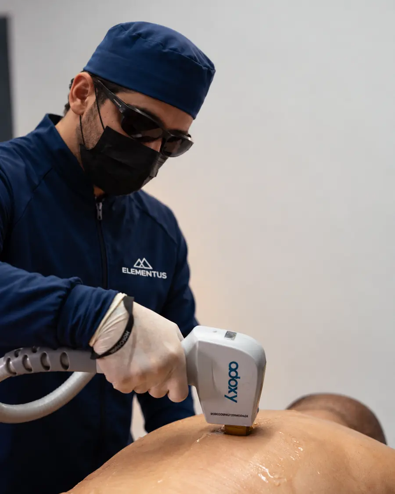
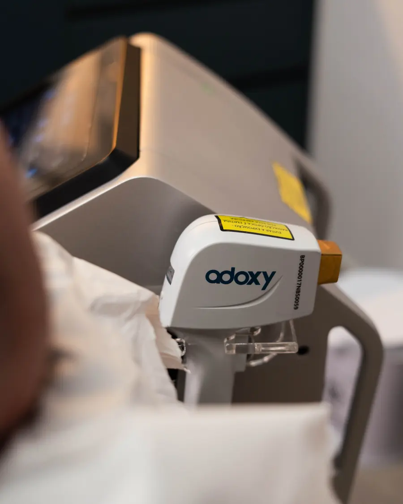

“Fiz uma sessão de depilação a LED na Elementus e fiquei muito satisfeito! Resolvi algo que atrapalhava muito minha autoestima, sem dor.”
Clínica exclusiva para homens · Jardim Goiás
Depilação LED Masculina em Goiânia
Chega de lâmina, pelos encravados e irritação. Na Elementus, você faz depilação a LED em um ambiente feito para homens, com profissionais homens e protocolo ajustado ao seu tipo de pele.
- Avaliação gratuita
- Todos os tons de pele
- Estacionamento gratuito
- Profissionais homens

5,0★★★★★168 avaliações no GoogleEm 1 minuto
Por que os homens escolhem a Elementus
Conheça a clínica, o equipamento e como funciona a sua sessão.
 VÍDEO EM BREVE
VÍDEO EM BREVEVantagens
8 motivos para fazer sua depilação na Elementus
01
Ambiente pensado para o homem
Uma clínica criada para o público masculino, do atendimento à decoração. Você fica à vontade do começo ao fim.
02
Menos foliculite e pelos encravados
Ao reduzir os pelos, o tratamento ajuda a diminuir a foliculite e os pelos encravados que a lâmina provoca, principalmente na barba.
03
Indicada para todos os tons de pele
O Holonyak, registrado na Anvisa, permite atender do fototipo I ao VI, inclusive pele negra, com parâmetros ajustados na avaliação.
04
Sessões rápidas
Modos de disparo pontual e de varredura agilizam as sessões, inclusive em áreas grandes como costas e pernas.
05
Sem filas, agenda fácil
Horário marcado e atendimento pontual. É só chamar no WhatsApp e escolher o melhor dia.
06
Resultados desde as primeiras sessões
A redução dos pelos é progressiva e muitos pacientes já notam diferença nas primeiras sessões. O plano é definido na sua avaliação.
07
Estacionamento amplo e gratuito
Chegue de carro sem preocupação: estacionamento gratuito no Jardim Goiás.
08
Profissionais homens
Atendimento feito por profissionais do sexo masculino, com discrição e conforto, inclusive para as áreas íntimas.

Tecnologia
Holonyak: LED de alta potência
A Elementus utiliza o Holonyak, equipamento de depilação a LED fabricado pela Adoxy e registrado na Anvisa sob o nº 82149139002.
- Todos os fototipos: segundo o fabricante, atende peles do fototipo I ao VI, inclusive pele negra.
- Resfriamento da ponteira para uma sessão mais confortável.
- Disparo pontual e varredura, que agilizam as sessões em áreas grandes.
- Energia distribuída de forma homogênea pelos diodos de LED.
Áreas tratadas
Da barba ao corpo todo
Você escolhe as regiões que mais incomodam e montamos um plano sob medida na avaliação gratuita.
Rosto e pescoço
- Barba e pescoço
- Faixa de barba
- Cavanhaque
- Pescoço
- Nuca
- Nariz
- Orelha
Tronco e braços
- Tórax
- Abdômen
- Costas e ombros
- Ombros
- Axilas
- Braços
- Mãos e dedos
Pernas e região íntima
- Glúteos
- Coxas
- Meia perna
- Pernas inteiras
- Virilha simples
- Virilha e perianal
Corpo todo: um plano que reúne todas as regiões.
Como funciona
Do primeiro contato à pele livre da lâmina
PASSO 1
Chame no WhatsApp
Tire suas dúvidas e marque a avaliação no melhor horário.
PASSO 2
Avaliação gratuita
Analisamos sua pele, seus pelos e as regiões que você quer tratar.
PASSO 3
Plano sob medida
Você recebe a indicação de sessões e o intervalo entre elas.
PASSO 4
Sessões e acompanhamento
Sessões rápidas, com orientação de cuidados antes e depois.
Avaliações no Google · 5,0 ★★★★★
Quem fez, recomenda
“Fui super bem atendido desde o primeiro momento. Todo mundo extremamente atencioso e as sessões de LED foram tranquilas e indolores. Recomendo.”
“Meu esposo ficou extremamente encantado com o profissionalismo, cuidado e atenção! Explicaram todo o processo, mesmo ele já tendo feito em outra clínica. Super recomendo! Homens, vão sem medo.”
Dúvidas frequentes
Perguntas sobre depilação LED masculina
A depilação LED dói?
A maioria dos pacientes descreve uma sensação de calor leve. A ponteira do equipamento tem resfriamento e os parâmetros são ajustados para o seu conforto.
Funciona em pele negra?
Sim. Segundo o fabricante, o Holonyak permite atender do fototipo I ao VI. Os parâmetros são definidos de acordo com o seu fototipo, avaliado na consulta gratuita.
Quantas sessões são necessárias?
Depende da região, da cor e da espessura dos pelos e de fatores hormonais. A quantidade é indicada na avaliação, e podem ser necessárias sessões de manutenção.
O resultado é definitivo?
O tratamento busca uma redução duradoura dos pelos, que varia de pessoa para pessoa. Pode haver pelos residuais e necessidade de manutenção.
Ajuda com foliculite na barba?
Ao reduzir a quantidade e a espessura dos fios, o tratamento pode diminuir os episódios de foliculite e pelos encravados. Casos com inflamação ativa são avaliados antes de iniciar.
Pelos brancos ou muito claros saem?
A resposta é limitada, porque a tecnologia depende do pigmento do pelo. Isso é avaliado na consulta.
Quem faz o procedimento nas áreas íntimas?
Profissionais homens, em sala privativa, com toda a discrição.
Os valores são informados pelo site?
Não. Os valores dependem das regiões e do plano definido na avaliação, e são informados pela equipe no atendimento.
Avaliação gratuita
Pronto para largar a lâmina?
Fale agora com a equipe da Elementus, tire suas dúvidas e marque sua avaliação gratuita. Atendimento de segunda a sexta, das 9h às 18h, e sábado, das 9h às 12h.
Rua 32, nº 1149 – Jardim Goiás, Goiânia – GO, 74805-350 · Como chegar
Conheça todos os tratamentos em clinicaelementus.com